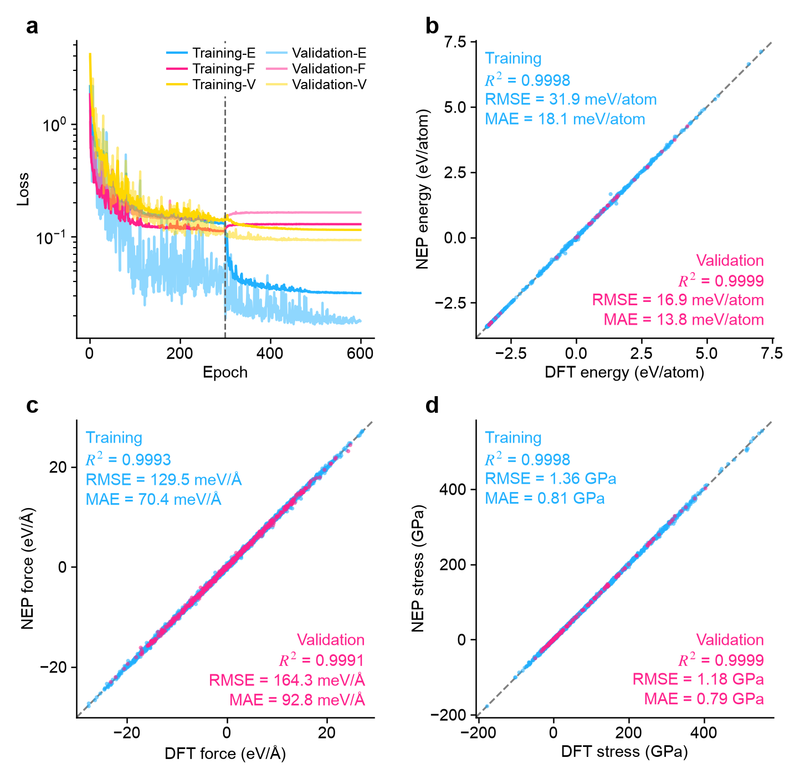
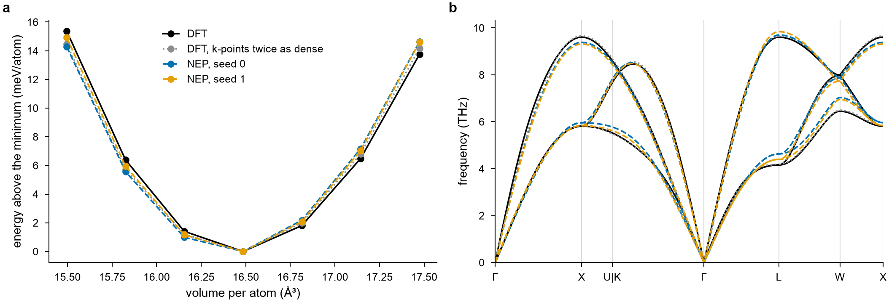
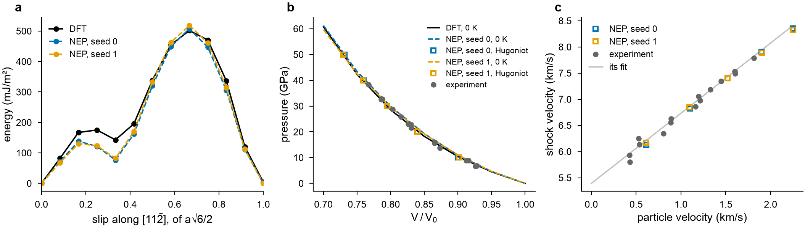
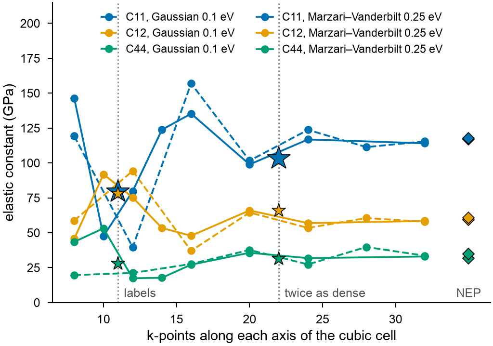

A potential from MDAPY's DFT¶
A machine-learned potential is as good as its labels. This page makes the whole chain in MDAPY: structures of aluminium generated as in Generated training sets for aluminium, labelled by MDAPY's plane-wave DFT on the GPU, a NEP model trained on them with torchnep (Wu et al. 2026), and the model's properties against those of the DFT itself: the equation of state, the elastic constants, the vacancy, a surface and the phonons near the crystal; the stacking fault and the compression to 70 % of the volume far from it, and the Hugoniot against experiment. The elastic constants of aluminium need far more k-points than labels do; the last section shows how many.
The labels¶
The "generated + crystals" set of that page: two thirds of the atoms from
generate_structures, one third perturbed fcc, bcc and hcp crystals, 520 cells of 2 to
54 atoms and 4820 atoms in all. The generated cells lie far from the crystal, and the
perturbed crystals span volumes from 85 to 115 % with strains of 5 %; the equilibrium
itself, where the equation of state, the vacancy and the phonons are measured, takes
48 more cells of fcc near it: cells of 4 and of 32 atoms in turn, volumes from 90 to
110 %, strains up to 2 % and atoms displaced by 0.03 Å, 864 atoms; and 24 cells of hcp
alike, of 2 and of 16 atoms, 216 atoms, for the difference of the two packings that a
stacking fault is made of. For the test, 91 cells of 1201 atoms from another generation
and other crystals:
generated = generate_structures("Al", volume=(8.3, 33.2), seed=0).structures
write("train.xyz", mixed([generated, crystals(50, 4800)], [2, 1], 4800))
write("near.xyz", near(51, 48))
write("near-hcp.xyz", near(52, 24, "hcp"))
other = generate_structures("Al", volume=(8.3, 33.2), seed=7).structures
write("test.xyz", mixed([other, crystals(57, 1200)], [2, 1], 1200))
crystals and mixed are those of the page of generated training sets, near is
def near(seed, cells, kind="fcc"):
rng = np.random.default_rng(seed)
unit = (
build_crystal("fcc", 4.04, elements="Al")
if kind == "fcc"
else build_crystal("hcp", 4.04 / np.sqrt(2), elements="Al")
)
frames = []
for k in range(cells):
crystal = unit if k % 2 == 0 else replicate(unit, (2, 2, 2))
volume = rng.uniform(0.90, 1.10)
frames += perturb(
scaled(crystal, volume), 1, displacement=0.03, strain=0.02, seed=rng
)
return frames
and the whole script is dft_training.py.
The DFT takes the PBE pseudopotential of aluminium of
PseudoDojo 0.4
(van Setten et al. 2018), 600 eV, a mesh of
at most 0.15 1/Å between k-points and the smearing of Marzari and Vanderbilt of 0.25 eV:
from mdapy.calculators import DFT
from mdapy.io import read_trajectory, write
dft = DFT(600.0, pseudopotentials={"Al": "Al.upf"}, kspacing=0.15,
smearing="marzari-vanderbilt", sigma=0.25) # fmt: skip
for name in ("train", "near", "near-hcp", "test"):
frames = [dft.compute(f, ("energy", "forces", "virial")).attach(f)
for f in read_trajectory(f"{name}.xyz")] # fmt: skip
write(f"{name}-dft.xyz", frames)
Each cell starts cold. The 611 cells took 6.3 GPU-hours on two A100 and two H100 GPUs, 37 s each on average: the small cells of many k-points take as long as the large ones of few. Every one converged, in 5 to 35 steps of the self-consistent field, 7 in the median. The 48 cells of fcc near the crystal took 41 minutes on two V100 GPUs, in 5 to 8 steps; the 24 of hcp 1.8 hours on an RTX A2000, in 5 to 8 steps.
The model¶
The energy of a plane-wave DFT counts the valence electrons against the cores of the pseudopotential: −63.06 eV per atom in the crystal here, a number that belongs to the pseudopotential, not to aluminium. The model learns the energies counted from that of one isolated atom by the same DFT, with spin, in a box of 12 Å and at Γ alone:
import numpy as np
from mdapy import System
atom = System([[6.0, 6.0, 6.0]], np.eye(3) * 12.0, elements="Al")
e_atom = DFT(600.0, pseudopotentials={"Al": "Al.upf"}, kpoints=(1, 1, 1),
smearing="marzari-vanderbilt", sigma=0.25, magmoms={"Al": 1.0}).compute(atom).energy # fmt: skip
−59.64 eV. Counted from it the crystal has −3.43 eV per atom, its binding energy (the cohesive energy of experiment is 3.39 eV), and the training cells lie between −3.43 and 7.08 eV per atom, numbers of the size a network starts from. Differences of energy, and so every property below, are the same either way.
Of the 592 training cells, 196 lie within 2 eV per atom of the lowest: the crystals and the generated cells close to them. The others are dimers and small clusters in vacuum, near the free atom and 3 to 5 eV per atom above the crystal, and compressions to half its volume, 5 to 10 eV above. The solid in molecular dynamics stays far below them: even on the Hugoniot at 50 GPa it is 0.7 eV per atom above its minimum. Counted alike, those cells lead the fit, and differences of tens of meV per atom near the crystal are lost: hcp came out 1 to 19 meV per atom below fcc, against 30 above in the DFT, and the stacking fault negative. Left out, they are never seen, and the model fails on every cell of their kind: its energies over all the test cells were 0.6 to 1 eV per atom off. Weighted, the cells within 2 eV per atom lead and the others stay in. The weight was chosen on the intrinsic stacking fault (below; 143 mJ/m² in the DFT) of models trained with weights of 5, 10, 20 and 50: 14, 57 to 77 (three seeds), 77 to 91 (three) and 79 mJ/m². It rises up to a weight of about 20 and no further. A tenth of the training cells, held out, chooses the best epoch, and the test cells are not seen:
from pathlib import Path
from torchnep import train_nep
NEP_IN = """type 1 Al
version 4
cutoff 6 4
n_max 8 8
basis_size 8 8
l_max 4 2 0
neuron 50
epoch 600
batch {batch}
lr 0.01
stage2 1
"""
frames = [f.with_info(energy=f.info["energy"] - len(f) * e_atom)
for name in ("train", "near", "near-hcp")
for f in read_trajectory(f"{name}-dft.xyz")] # fmt: skip
lowest = min(f.info["energy"] / len(f) for f in frames)
frames = [f.with_info(weight=20.0) if f.info["energy"] / len(f) < lowest + 2.0 else f
for f in frames] # fmt: skip
Path("nep").mkdir(exist_ok=True)
write("nep/train.xyz", frames)
batch = round(150 * len(frames) / sum(len(f) for f in frames))
Path("nep/nep.in").write_text(NEP_IN.format(batch=batch))
train_nep(
"nep/nep.in", "nep/train.xyz", output_dir="nep", device="cuda", valid_ratio=0.1
)
Two models, of the seeds 0 and 1, trained in 312 and 381 s on an RTX A2000. Their errors on the 91 test cells and on the 25 of them within 2 eV per atom of the lowest:
| Model | Energy (meV/atom) | Forces (eV/Å) | Virial (meV/atom) | Energy, the 25 | Forces, the 25 |
|---|---|---|---|---|---|
| seed 0 | 29 | 0.156 | 120 | 10.7 | 0.035 |
| seed 1 | 29 | 0.168 | 113 | 13.6 | 0.036 |
The test cells are generated ones, as the training cells: their energies lie 3.4 eV per atom above the lowest in the median, up to 7.2, and their forces reach 24 eV/Å.
torchnep draws the training from the files it writes:

The model of seed 0: the root mean square errors of the energy, the forces and the virial against the epoch, of the training cells and of the tenth held out, the second stage from the dashed line; and the energies, forces and stresses of the training cells (blue) and of the tenth held out (red) against the DFT.
Properties¶
The same functions of mdapy.properties, the
defect energies and the
phonons, take the DFT and the model alike:
from mdapy.build import build_crystal
from mdapy.calculators import NEP
from mdapy.properties.defects import surface_energy, vacancy_formation_energy
from mdapy.properties.phonons import phonons, primitive_cell
from mdapy.transform import replicate
for calculator in (dft, NEP("nep/nep_best.txt")):
# a0 of the Birch-Murnaghan fit of seven volumes from 94 to 106 %, then at a0:
crystal = build_crystal("fcc", a0, elements="Al")
vacancy = vacancy_formation_energy(
replicate(crystal, (3, 3, 3)), calculator, max_force=0.01
)
surface = surface_energy(crystal, calculator, axis=2, max_force=0.01)
bands = phonons(primitive_cell(crystal), calculator, supercell=4).band_structure(
"fcc"
)
| DFT | DFT, k-points twice as dense | NEP, seed 0 | NEP, seed 1 | |
|---|---|---|---|---|
| a0 (Å) | 4.038 | 4.036 | 4.034 | 4.036 |
| B0 (GPa) | 78.4 | 77.5 | 78.9 | 80.1 |
| vacancy (eV) | 0.669 | 0.656 | 0.663 | 0.732 |
| (100) surface (J/m²) | 1.006 | 1.008 | 0.925 | 1.036 |
| X, TA and LA (THz) | 5.81, 9.61 | 5.84, 9.66 | 5.96, 9.38 | 5.83, 9.31 |
| L, TA and LA (THz) | 4.16, 9.61 | 4.18, 9.65 | 4.63, 9.70 | 4.40, 9.84 |
The figure, from the values these functions return (kept by
dft_training.py in properties-WHO.json):
import json
import matplotlib.pyplot as plt
import numpy as np
who = {
"dft": "DFT",
"dft-fine": "DFT, k-points twice as dense",
"nep_0": "NEP, seed 0",
"nep_1": "NEP, seed 1",
}
style = {
"dft": ("k", "-"),
"dft-fine": ("0.55", ":"),
"nep_0": ("C0", "--"),
"nep_1": ("C1", "--"),
}
props = {k: json.loads(open(f"properties-{k}.json").read()) for k in who} # fmt: skip
fig, (eos, bands) = plt.subplots(1, 2, figsize=(7, 2.6))
for k, p in props.items():
color, line = style[k]
v, e = np.asarray(p["volumes"]), np.asarray(p["energies"]) # ų and eV per atom
eos.plot(v, 1e3 * (e - e.min()), line, marker="o", ms=3, c=color, label=who[k])
x, y = np.asarray(p["phonon_distances"]), np.asarray(p["phonon_frequencies_THz"])
for branch in range(y.shape[1]):
bands.plot(
x, y[:, branch], line, c=color, label=who[k] if branch == 0 else None
)
eos.set(xlabel="volume per atom (ų)", ylabel="energy above the minimum (meV/atom)")
eos.legend()
ticks = props["dft"]["phonon_labels"] # (distance, name) of the high-symmetry points
bands.set_xticks([d for d, _ in ticks], [name for _, name in ticks])
for d, _ in ticks:
bands.axvline(d, c="0.85", lw=0.5, zorder=0)
bands.set(xlim=(0, ticks[-1][0]), ylim=(0, None), ylabel="frequency (THz)")
fig.savefig("properties.png", dpi=300)

a: the equation of state, the energy per atom against the volume per atom from 94 to 106 %. b: the phonons along the high-symmetry path of fcc.
- The equation of state of the models lies within 0.004 Å of the DFT in a0 and 1.7 GPa in B0; the DFT with k-points twice as dense moves a0 by 0.002 Å and B0 by 0.9 GPa: the labels are converged enough for it.
- The vacancy comes out 0.006 eV low and 0.06 eV high; the (100) surface 0.08 J/m² low and 0.03 high.
- The phonons agree along the path within 0.22 and 0.19 THz in the root mean square; the largest differences, 0.5 to 0.6 THz, are the lowest branch at W, high in the model of seed 0, and the longitudinal one between Γ and X, low in that of seed 1.
Far from the crystal¶
The generalized stacking fault, (111) planes slipped along [11̄2] in a slab of 12 layers, each point relaxed normal to the planes; the cold crystal compressed to 70 % of its volume; and the Hugoniot, the states a shock reaches from the crystal at 300 K, by molecular dynamics of 2048 atoms with the Hugoniostat (Ravelo et al. 2004), its barostat alike along every axis, 20 ps at each pressure and the last 10 averaged:
from mdapy.properties.defects import stacking_fault_energy
from mdapy.simulation import MolecularDynamics
layers = build_crystal("fcc", a0, elements="Al",
orientation=[(1, 1, -2), (-1, 1, 0), (1, 1, 1)], repeat=(1, 1, 4)) # fmt: skip
curve = stacking_fault_energy(
layers, calculator, [a0 * np.sqrt(6) / 2, 0, 0], points=13, max_force=0.01
)
nep = NEP("nep/nep_best.txt")
crystal = build_crystal("fcc", a0, elements="Al", repeat=8)
with MolecularDynamics(crystal, nep, timestep=0.001) as md:
md.velocities(600, seed=1)
md.run(10000, ensemble="npt", temperature=300, pressure=0.0, barostat="iso")
warm = md.system
md.run(0)
ambient = md.thermo[-1]
reference = (ambient["total_energy"][0], ambient["volume"][0], 0.0)
for pressure in (10.0, 20.0, 30.0, 40.0, 50.0):
with MolecularDynamics(warm, nep, timestep=0.001) as md:
md.run(20000, ensemble="nphug", pressure=pressure, barostat="iso",
hugoniot=reference, thermostat_damping=0.1, barostat_damping=1.0) # fmt: skip
late = md.thermo.filter(md.thermo["time"] >= 10.0)

a: the generalized stacking fault on (111) along [11̄2]. b: the pressure against the volume, of the cold crystal and on the Hugoniot, with the measured Hugoniot of aluminium 1100 (Marsh 1980). c: the shock velocity against the particle velocity, the measured ones with the linear fit of their table.
- The stacking fault of the DFT has its unstable maximum at 175 mJ/m² and the intrinsic fault at 143; the models have 139 and 131, and 77 and 82, half the DFT's intrinsic fault. Its energy is that of hcp against fcc, 29.6 meV per atom above in the DFT and 17 and 18 in the models: near the crystal the models put fcc 2 to 6 meV per atom too high and hcp 8 to 11 too low, errors of the size of their errors there, and no cell of training holds a fault. The maximum of the slip, 502 mJ/m², they give within 16.
- The cold compression to 70 % of the volume takes 60.7 GPa in the DFT and 61.2 and 59.7 in the models; at 80 %, 28.5 against 29.8 and 29.5.
- The Hugoniot of the models follows the measured one of aluminium 1100: from 10 to 50 GPa their shock velocities lie 0.2 to 1.4 % below the linear fit of the measurements, and the shocked crystal reaches 1300 K at 50 GPa. The measurements go up to 1.8 km/s of particle velocity, about 33 GPa; at 40 and 50 GPa the models are compared with the fit continued. At 300 K the crystal of the models is 1.7 % less dense than the alloy (2.665 and 2.668 g/cm³ against 2.713).
Elastic constants and k-points¶
The elastic constants are the curvature of the energy under small strains, and in a
metal the Fermi surface changes under them: they need a dense mesh, much denser than
the energies and the forces of the labels. With the labels' mesh, 11 × 11 × 11 on the
cubic cell, the DFT gives C11, C12 and C44 of 79, 78 and 28 GPa; with the mesh twice as
dense 103, 66 and 31. On meshes from 8 to 32 k-points along each axis of the cubic cell
of four atoms (kconv.py):

The elastic constants of the DFT jump with the mesh up to about 20 k-points along each axis and settle from 24, at 114, 58 and 33 GPa with 32, the two smearings alike. Stars: the DFT on the mesh of the labels, 11 k-points along each axis, and on one twice as dense; diamonds, at the right: the two models.
| C11 (GPa) | C12 (GPa) | C44 (GPa) | |
|---|---|---|---|
| DFT, the labels' mesh (11³ on the cubic cell) | 79 | 78 | 28 |
| DFT, k-points twice as dense (22³) | 103 | 66 | 31 |
| DFT, 24³ | 117 | 57 | 32 |
| DFT, 32³ | 114 | 58 | 33 |
| NEP, seed 0 | 117 | 59 | 32 |
| NEP, seed 1 | 118 | 61 | 35 |
The DFT with the smearing of Marzari and Vanderbilt of 0.25 eV, as the labels.
The phonons depend on the mesh far less: with k-points twice as dense they move by 0.5 % (the table above), where C11 moves by a quarter. A strain of 1 % shifts the energy of the cell by a few meV, and as it moves bands across the Fermi level a coarse mesh counts them in steps of the same size; a phonon comes from the forces of atoms displaced by 0.01 Å in a supercell of 4 × 4 × 4 primitive cells, derivatives that vary smoothly, on a mesh that the supercell makes denser. What does need dense meshes among phonons are the Kohn anomalies of a metal, fine features of the dispersion where a phonon spans the Fermi surface.
The smearing trades a bias of the energy against the mesh. A width σ spreads the occupations of the bands over σ about the Fermi level, so that fewer k-points sample the Fermi surface smoothly and the self-consistent field converges more easily; the energy computed is then the free energy E − TS of an electronic temperature. With the smearing of Marzari and Vanderbilt ("cold") or of Methfessel and Paxton the bias is of high order in σ, and metals take 0.2 to 0.3 eV (VASP's advice for metals is ISMEAR = 1, SIGMA = 0.2); a Gaussian biases at second order and takes 0.05 to 0.1 eV, Fermi–Dirac is the physical electronic temperature. For labels the same σ throughout the set matters most, and σ and the mesh are converged together: with a Gaussian or Fermi–Dirac, −TS of about 1 meV per atom or less, or an extrapolation to σ → 0; with cold smearing the bias is small even where −TS is not. Here MV of 0.25 eV gives the same elastic constants as a Gaussian of 0.1 eV on the dense meshes.
The models give the elastic constants of the converged DFT, though the DFT of their labels gives others. They do not learn its finite differences: on the labels' mesh the energy of each cell carries an error of the k-points that jumps from cell to cell as bands cross the Fermi level, steps as large as the elastic energy of a strain of 1 %. The model is a smooth function of the atoms fitted to hundreds of cells strained by up to 5 %; it cannot follow those steps and averages them out, keeping the smooth curvature under them. Fitted to fewer cells, models follow the labels more closely: trained on the 196 cells within 2 eV per atom of the lowest alone, they gave C11 of 89 to 99 GPa. What the fit averages out is the scatter of the labels, not their bias: an error the same in every cell, of the pseudopotential, the functional or the smearing, the model learns as it is. Quantum ESPRESSO on the same cell, pseudopotential, mesh and Gaussian smearing gives C11 of 156.8 and 123.4 GPa with 16 and 24 k-points along each axis, where MDAPY gives 157.0 and 123.7: the jumps are aluminium's, not the code's.
Running it¶
python dft_training.py sets
python dft_training.py atom
python dft_training.py label train 0 4 # and 1 4, 2 4, 3 4: on four GPUs; then near, near-hcp and test
python dft_training.py train 0 # and 1
python dft_training.py errors
python dft_training.py properties dft # and dft-fine, nep_0, nep_1
python dft_training.py hugoniot 0 # and 1
python kconv.py 8 12 16 20 24 28 32 # Gaussian 0.1 eV
SMEARING=marzari-vanderbilt SIGMA=0.25 python kconv.py 8 10 12 14 16 20 24 32
python figures.py . images
The scripts: dft_training.py,
kconv.py and figures.py.
The properties of the DFT took 34 minutes on an H100 with the labels' mesh and two hours on an A100 with the mesh twice as dense, the vacancy of 107 atoms most of them, and its stacking fault 4.4 hours on a V100; those of a model, a second, and its Hugoniot of five points 27 minutes on the RTX A2000.
See also¶
- Plane-wave DFT, its verification and its speed.
- Generated training sets for aluminium, the same structures labelled by MatterSim.
Please cite
The pseudopotentials: van Setten et al. (2018); the model: Fan et al. (2022) and Wu et al. (2026).